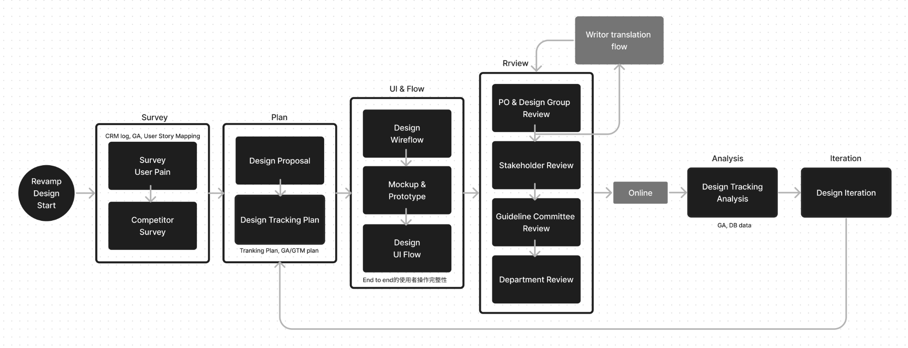
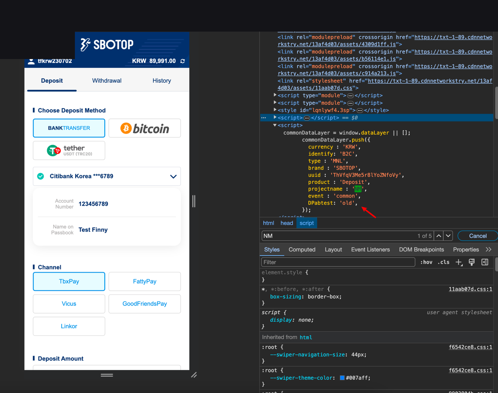
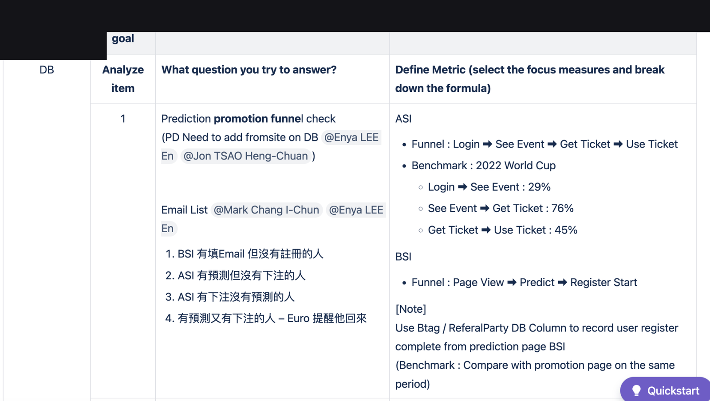

以假設（hypothesis）驅動儲值體驗改版：建立功能上線紀錄與追蹤計畫、埋設 GA／datalayer 區分新舊用戶，並用監控數據迭代教學影片、再試一次、快速標籤等功能；同時分享分流錯誤等採坑。 並延伸以假設卡與 DB／GA 成功率對照完成功能複盤。
舊儲值流程轉換與自助完成率不足；教學與通路資訊不易被發現；新舊用戶行為不同，若未正確分流與埋點，會誤判改版成效。
定義 Revamp workflow（調查→追蹤計畫→UI→審核→上線→分析→迭代）；為各功能寫 For/If/Then/Because/Impact 假設；GA event + datalayer 區分新舊客；依點擊與儲值成功率迭代 UI（更明顯按鈕、PiP 教學影片等）。
建立可重複使用的 Design Tracking / GA 規劃模板
CRM／GA／User Story Mapping 調查 → Design Proposal & Tracking Plan → Wireflow／Mockup → 多層 Review → Online → Tracking Analysis → Iteration。
以「教學影片降低詢問率」「再試一次提高成功率」等假設對應 GA 點擊與 CRM；datalayer 區分 old/new user，避免平均指標掩蓋差異。
從「看不到」到更明顯按鈕、PiP 影片；分享 user 分流錯誤與找出關鍵影響者的監控案例。
統一用 For [user] if [feature] then [behavior] because [reason] which will impact [metric]，並指定 Monitor 來源。
DB 成功率、GA 點擊比例、影音觀看；記錄特定通路異常詢問與新舊客點擊下降原因，提出分流埋點修正。


